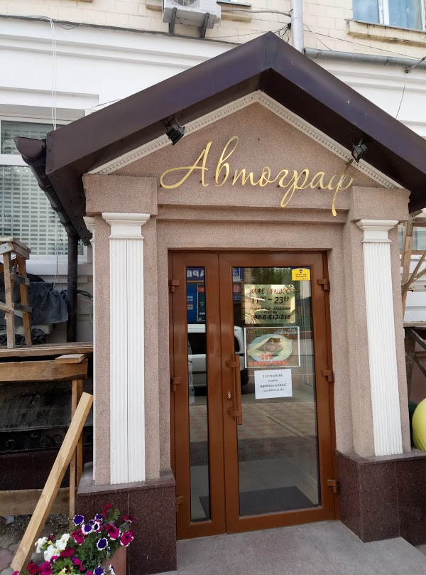
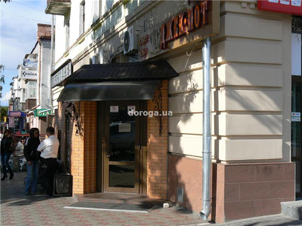
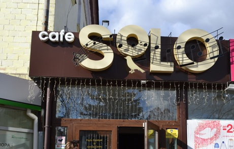
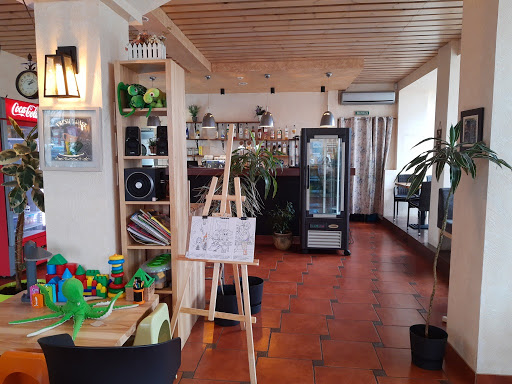
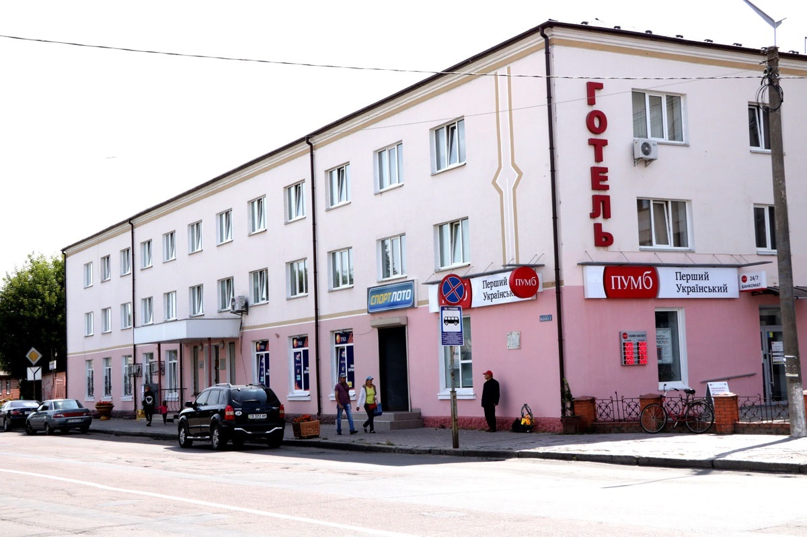
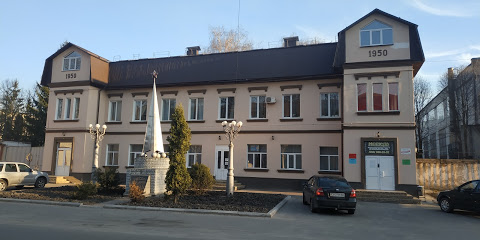

Кафе "Автограф"
Європейська та українська кухня.
вул.Овдіївська 1. тел: (098) 861-22-16

Кафе "ДжекПот"
Українська та європейська кухня, піца, суші.
вул. Гоголя, 2А

Кафе "Solo"
Європейська кухня з італійським акцентом: піца, паста тощо
вул. Гоголя, 2А

Піцерія "Uno Momento"
Італійська кухня. Безкоштовна доставка піци по місту. Приємний інтер'єр.
вул. Шевченка, 128

Готель "Ніжин"
Номерний фонд готелю складається з 36 номерів, різних категорій, що включають: 14 люксів (6-одномісних і 8-двомісних), 4-чотиримісних, 7-тримісних і 11 двомісних номерів. Всі номери оснащені всім необхідним для комфортного мешкання.
вул. Батюка, 1, Тел. 097 8078998; 04631 25060

Міні-готель "Уненеж"
Номерний фонд готелю складається з 36 номерів, різних категорій, що включають: 14 люксів (6-одномісних і 8-двомісних), 4-чотиримісних, 7-тримісних і 11 двомісних номерів. Всі номери оснащені всім необхідним для комфортного мешкання.
вул. Богдана Хмельницького, 37, Тел. 097 8078998; 04631 25060